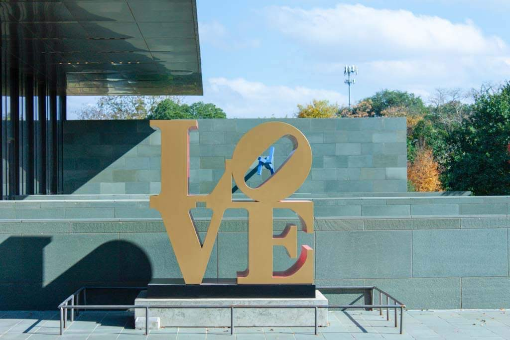
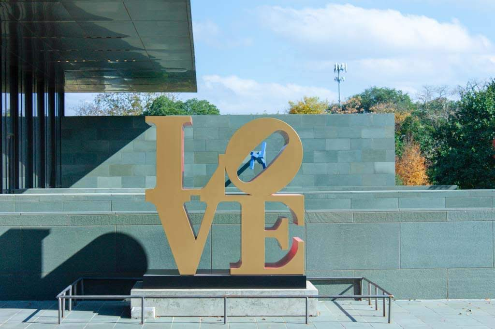

Steven's Portfolio
This is my portfolio.
Click here to get a random message:
This is my portfolio.
Click here to get a random message:
A brief intro:
I am a CS student at Trinity University. I have always had an interest in cs ever since I was a kid. I volunteered with the School's Out Hackathon, held at Trinity University, and acted as their Director of Technology. I have also worked for the GEMS summer camp as a Python instructor as well as performing research for the University of the Incarnate Word's AVS Lab.
After my STEP internship with Google has concluded, I hope to resume working with the University of the Incarnate Word's AVS Lab and researching the uses of natural language processing. I also hope to work with my professors at Trinity on their research of Saturn and it's rings.
A few different hobbies that I have had over the years would be that I played the cello from elementary school until my senior year of high school. I also have gained an interest in photography, however I have yet to get myself a camera that is more sophisticated than my phone.
Here are a couple of the things that I like to take pictures of.
 


You can find my GitHub here